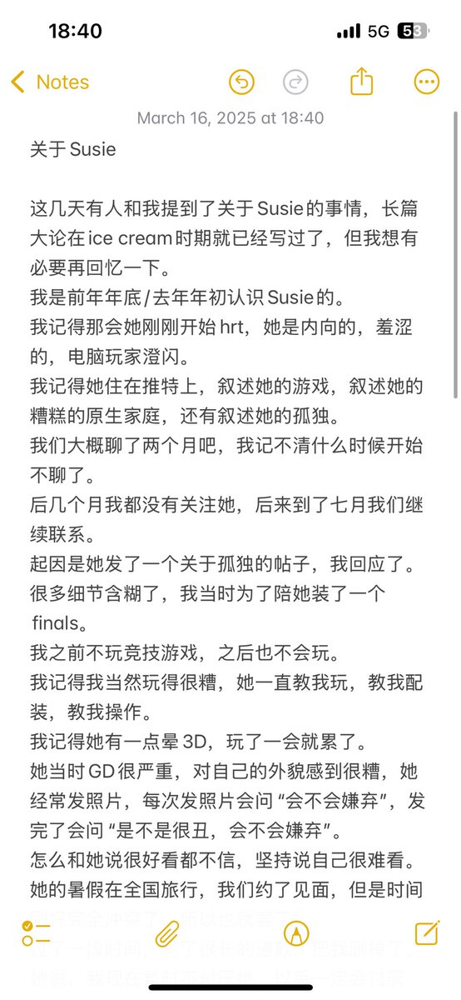
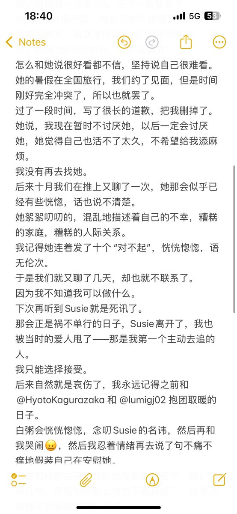
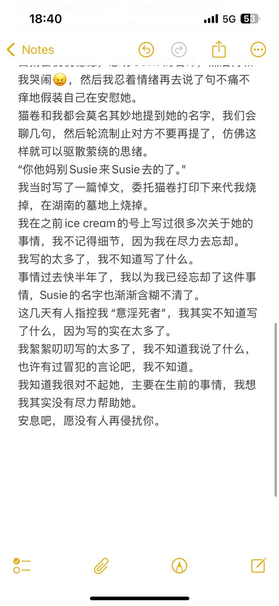

我跟Susie感情一直很好，如果OP有侮辱死者的话我肯定不会放过他的
哦对还有个Susie的QQ好友给她发了句“死得好”，我不知道Susie是怎么认识你的，你以为你给逝者发消息这样搞没人知道是吧，你别急，我出了这么多人户籍，没出你的只是最近一直忙外加我确实精神病恶化不想再被Susie搞PTSD，不过我没忘这事

哦对还有个Susie的QQ好友给她发了句“死得好”，我不知道Susie是怎么认识你的，你以为你给逝者发消息这样搞没人知道是吧，你别急，我出了这么多人户籍，没出你的只是最近一直忙外加我确实精神病恶化不想再被Susie搞PTSD，不过我没忘这事



关于Susie的事情。
我找不到太多证据因为我刻意删除了。
但我不会忘却和@HyotoKagurazaka 以及@lumigj02 为了她的事情抱团取暖的日子。
我希望没有人再侵扰她。 https://t.co/BofIkVHgtS
我找不到太多证据因为我刻意删除了。
但我不会忘却和@HyotoKagurazaka 以及@lumigj02 为了她的事情抱团取暖的日子。
我希望没有人再侵扰她。 https://t.co/BofIkVHgtS